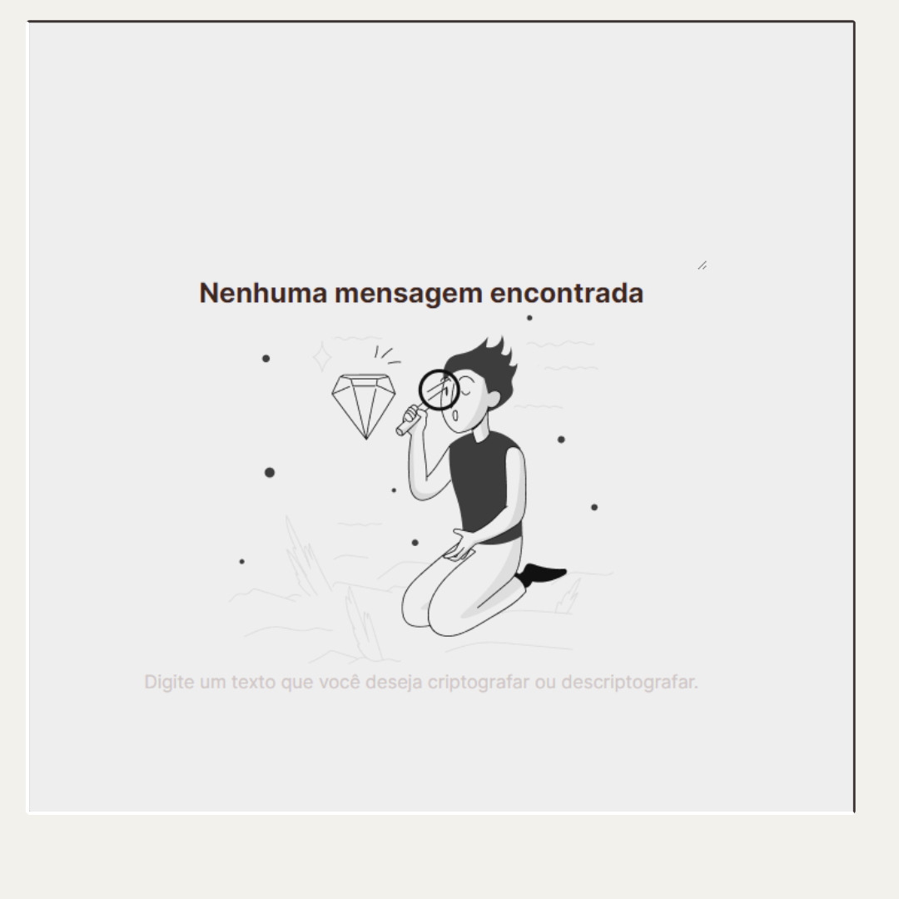

💻 Decriptador
Esse é um projeto que iniciei em fevereiro e terminei ele em março, através de um curso sobre front-end da ORACLE eu consegui construir esse pequeno projeto, ele é bem simples, é basicamente um Decriptador/Criptador simples onde você pode códificar mensagens, caso queira visualizar basta clicar aqui
👨💻 Projeto FuzzyLab
Minha primeira experiência em um grande projeto, minha primeira tarefa aqui foi criar uma pequena automação para integrar o projeto BreachImpostor, ainda tem um grande caminho pela frente e esse projeto promete me oferecer bastante aprendizado.